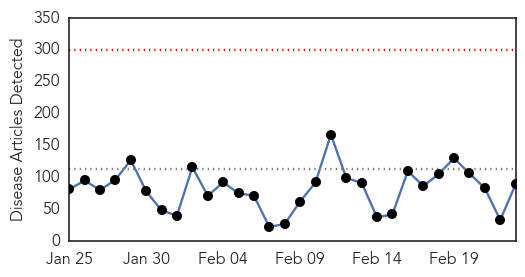
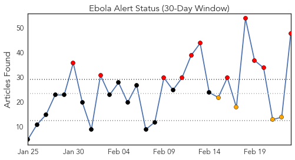
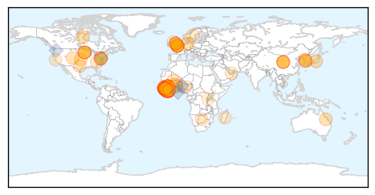
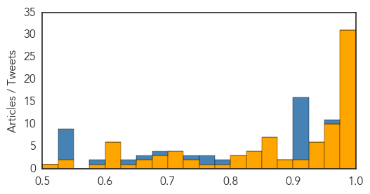

Dengue Fever
30-Day Web Trend
8 alerts, 2 warnings

30-Day Twitter Trend
0 alerts, 0 warnings

Article Locations

Article Confidences

Top Articles:
- 0.976
- Declare national emergency in combating dengue pandemic ― Charles Santiago
- 0.975
- Dengue situation in coastal town described as alarming - Nation
- 0.901
- Revealed: Holiday hotspots included in world's most dangerous destinations to fall ill
- 0.897
- Revealed: World's most dangerous places to fall ill
- 0.675
- Genetically Modified Mosquitoes Have Few Proven Benefits, Too Many Risks
- 0.591
- Reducing Mosquitoes Is Vital to Human Health
Top Tweets:
-
No tweets found for Feb 23, 2015
Ebola
30-Day Web Trend
0 alerts, 0 warnings

30-Day Twitter Trend
11 alerts, 4 warnings

Article Locations
Article Confidences
Top Articles:
- 1.000
- Obasanjo Seeks Support For West Africa
- 1.000
- Six lessons from the initial failed international response to Ebola
- 0.999
- As Ebola wanes, MN sticks with expensive monitoring program
- 0.999
- Sierra Leone quarantines Ebola-hit orphanage
- 0.999
- Ebola drug in Guinea helps some, stirs debate on broader use
- 0.998
- Liberia Lifts Ebola Curfew, Opens Borders
- 0.998
- Sierra Leone quarantines Ebola-hit orphanage
- 0.998
- As Ebola outbreak wanes in West Africa, Minnesota sticks with costly monitoring program
- 0.998
- Sierra Leone quarantines Ebola-hit orphanage
- 0.997
- Liberia lifts Ebola curfew, reopens borders
- 0.997
- Canada to Stop Issuing Visas to People from West African Countries
- 0.997
- 2 leading Ebola vaccines appear safe, WHO says
- 0.996
- Minnesota could monitor travelers for Ebola another year
- 0.996
- Robbery Matter Involving Former Health Minister Committed to High Court
- 0.996
- VIDEO: Liberia reopens border with Sierra Leone
- 0.996
- Interview: UN official urges vigilance as Ebola situation improves
- 0.995
- 833 Health Workers Infected With Ebola
- 0.994
- Ebola and the battle against complacency
- 0.994
- Observer
- 0.992
- Sierra Leone orphanage quarantined
- 0.991
- Raising awareness about Ebola - Sierra Leone
- 0.991
- Ebola drug shows some promise in first tests in West Africa - MyNorthwest
- 0.988
- Life Sciences Index Novavax Announces Initiation of Ebola Vaccine Phase 1 Clinical Trial
- 0.986
- Liberia leader urges help in post-Ebola phase
- 0.985
- UK Ebola medics under investigation
- 0.984
- S. Korea's 2nd Ebola relief team set to return home
- 0.984
- Ebola UN development chief begins last leg of West Africa mission
- 0.980
- Maryland officials probe death of inmate in steam-filled cell
- 0.980
- Scouts slam Jameis Winston’s makeup: Likely ‘bust’
- 0.980
- Care International maps out strategies for Post Ebola engagement in Sierra Leone
- 0.977
- Sierra Leone: Sierra Leone quarantines Ebola-hit orphanage
- 0.970
- Guinean Doctor Survives Ebola, Pays It Forward - Guinea
- 0.967
- Dead Que. man tests negative for Ebola
- 0.967
- Africa: Africa Must Have Faith in Its Abilities
- 0.963
- WHO Gives OK to First Rapid-Result Ebola Diagnostic
- 0.958
- Sierra Leone: Maternal health in a time of Ebola
- 0.957
- New WHO Regional Director Commends Sierra Leone in the Fight against Ebola
- 0.954
- Liberia re-opens land border following deadly Ebola outbreak
- 0.954
- UK Defence Secretary Visits Sierra Leone
- 0.951
- Ebola: how to prevent a lethal legacy for food security
- 0.950
- LIBERIA: Brown Lauds EU Role in Fighting Ebola
- 0.946
- Obasanjo visits Ebola-hit countries
- 0.937
- Positive News in Ebola Recovery from Sierra Leone
- 0.933
- Ecobank Wins Best Bank 2014 Accolade
- 0.927
- Communities urged not to resort to unorthodox means in treating Ebola
- 0.926
- Ebola 'could spike again'
- 0.926
- S. Korea's 2nd Ebola relief team set to return home
- 0.920
- Ebola medics recount mission on edge of death, AsiaOne World News
- 0.915
- Alpha Sorority Distributes US$100,000 Medical Supplies
- 0.885
- AUDIO SLIDESHOW: Ebola: Back to school, but is it safe?
Showing top 50 articles...
Top Tweets:
- 0.989
- World Health Organization Approves New 15 Minute Ebola Test - GOOD Magazine http://t.co/zwEzAEndrk ebola EVD
- 0.989
- World Health Organization Approves New 15 Minute Ebola Test - GOOD Magazine http://t.co/yYYjnIsUDB ebola EVD
- 0.989
- World Health Organization Approves New 15 Minute Ebola Test - GOOD Magazine http://t.co/xq8qcOhZ2W ebola EVD
- 0.989
- World Health Organization Approves New 15 Minute Ebola Test - GOOD Magazine http://t.co/wifhneGA2Q ebola EVD
- 0.989
- World Health Organization Approves New 15 Minute Ebola Test - GOOD Magazine http://t.co/sW43b0y2kG ebola EVD
- 0.989
- World Health Organization Approves New 15 Minute Ebola Test - GOOD Magazine http://t.co/rU7yIbIZ1R ebola EVD
- 0.989
- World Health Organization Approves New 15 Minute Ebola Test - GOOD Magazine http://t.co/otxDGmDttU ebola EVD
- 0.989
- World Health Organization Approves New 15 Minute Ebola Test - GOOD Magazine http://t.co/nOThaqgxjP ebola EVD
- 0.989
- World Health Organization Approves New 15 Minute Ebola Test - GOOD Magazine http://t.co/m1yd9WtKjy ebola EVD
- 0.989
- World Health Organization Approves New 15 Minute Ebola Test - GOOD Magazine http://t.co/i8hpXPogAo ebola EVD
- 0.989
- World Health Organization Approves New 15 Minute Ebola Test - GOOD Magazine http://t.co/blI8TTpyYS ebola EVD
- 0.989
- World Health Organization Approves New 15 Minute Ebola Test - GOOD Magazine http://t.co/bR4zWucCeE ebola EVD
- 0.989
- World Health Organization Approves New 15 Minute Ebola Test - GOOD Magazine http://t.co/TnsMmmHat1 ebola EVD
- 0.989
- World Health Organization Approves New 15 Minute Ebola Test - GOOD Magazine http://t.co/9KtIpiFZxw ebola EVD
- 0.941
- The Ebola virus epidemic has caused more than 10,000 children in West Africa to lose one or both parents. AfricaAgainstEbola AUonebola
- 0.932
- 2 leading Ebola vaccines appear safe, WHO says - Baxter Bulletin http://t.co/PnkkoDxeBT ebola EVD
- 0.926
- Ebola Drug Shows Some Promise in First Tests in West Africa - ABC News http://t.co/Qo9rbfC4ZB ebola EVD
- 0.921
- Liberia Lifts Ebola Curfew, Opens Borders - Voice of America http://t.co/2TO3F9WzQG ebola EVD
- 0.913
- President of Liberia reopens borders, lifts curfew imposed due to Ebola outbreak - http://t.co/GffD6BGkbO http://t.co/VOy786mzJJ ebola EVD
- 0.913
- President of Liberia reopens borders, lifts curfew imposed due to Ebola outbreak - http://t.co/GffD6BGkbO http://t.co/IBMjVTQWR2 ebola EVD
- 0.910
- Food drive for Ebola survivors in West Africa launched in Brooklyn Park - MinnPost http://t.co/TZwJcsCdiw ebola EVD
- 0.877
- North Korea, running scared from Ebola, bans foreigners from marathon - Reuters http://t.co/jtkeSIPxmF ebola EVD
- 0.862
- Ebola Update: 23,371 confirmed, probable and suspected cases reported in 3 most affected countries, w 9,442 deaths https://t.co/gYTmkCY9BH
- 0.849
- The Task After Ebola - New York Times http://t.co/rOYbyRTtDo ebola EVD
- 0.844
- Ebola Fight: IMF Gives Guinea Extra $37.7 M To Combat Ebola http://t.co/lT4goPYGXg
- 0.838
- UK Ebola medics under investigation - BBC News http://t.co/zBHrmEvMeh ebola EVD
- 0.838
- UK Ebola medics under investigation - BBC News http://t.co/lWVkNSs7Nr ebola EVD
- 0.838
- UK Ebola medics under investigation - BBC News http://t.co/TaLOebwbk5 ebola EVD
- 0.838
- UK Ebola medics under investigation - BBC News http://t.co/CFIxvshvpJ ebola EVD
- 0.838
- UK Ebola medics under investigation - BBC News http://t.co/4cqxaxWpTI ebola EVD
- 0.836
- RT: Ebola Update: 23,371 confirmed, probable and suspected cases reported in 3 most affected countries, w 9,442 deaths https://t.co…
- 0.801
- VIDEO. The Ebola outbreak: Getting to zero cases http://t.co/UGxGyYoycj
- 0.746
- As Ebola wanes, MN sticks with expensive monitoring program - Minnesota Public Radio News http://t.co/lGHM3xzHFj ebola EVD
- 0.746
- As Ebola wanes, MN sticks with expensive monitoring program - Minnesota Public Radio News http://t.co/Sig3hvgx2m ebola EVD
- 0.746
- As Ebola wanes, MN sticks with expensive monitoring program - Minnesota Public Radio News http://t.co/IuUrg8wE92 ebola EVD
- 0.746
- As Ebola wanes, MN sticks with expensive monitoring program - Minnesota Public Radio News http://t.co/C470c6w2J9 ebola EVD
- 0.746
- As Ebola wanes, MN sticks with expensive monitoring program - Minnesota Public Radio News http://t.co/7yIfyiwuIu ebola EVD
- 0.694
- Senegal. Ebola : les femmes de la CNTS s'engagent dans la prévention http://t.co/5Bc85kFfpq
- 0.638
- Ebola crisis: SierraLeone orphanage quarantined http://t.co/4l9m9bYOl7
- 0.592
- RT: Ebola cases are down in Sierra Leone. Here's how is working on StoppingEbola for good: http://t.co/Dl17qQswXz
- 0.586
- Federal Funding in Support of Ebola Medical Countermeasures R&D by
- 0.577
- Ebola and the battle against complacency - http://t.co/9p21lKLIva http://t.co/rFFyevTgWj ebola EVD
- 0.566
- Ebola orphans quarantined http://t.co/G5YB8dKHtE AfricaAgainstEbola Ebolaresponse EBOLANEWS
- 0.566
- + @GovernmentZA sent 19 nurses and 2 paramedics to Sierra Leone. Africaagainstebola to fight Ebola http://t.co/pxrGqaZjtB
- 0.561
- RT: .@IOM_news shows congressional staff & our Dir. @JeremyKonyndyk an Ebola health worker training in SierraLeone http://t.co/2…
- 0.553
- RITE focuses on investigation, responsive health teams going to remote areas when Ebola case is suspected. http://t.co/Sl8GW8YwNk
- 0.522
- Today's news on avianflu avianinfluenza Ebola EbolaResponse MERS available here: http://t.co/TkQFQGi6VZ
- 0.508
- Phenomena: - National Geographic http://t.co/NXSNGEMoM1 ebola EVD